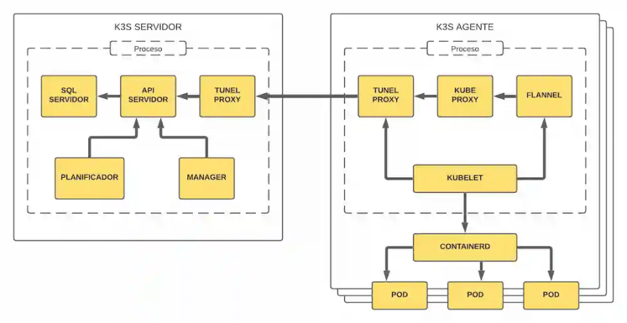
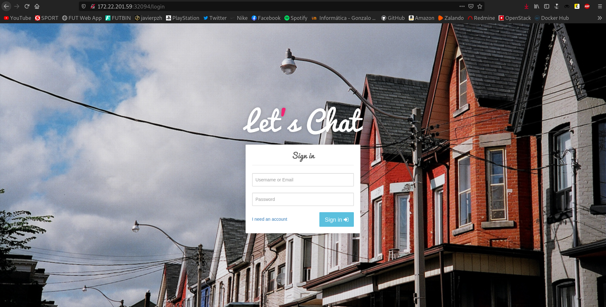
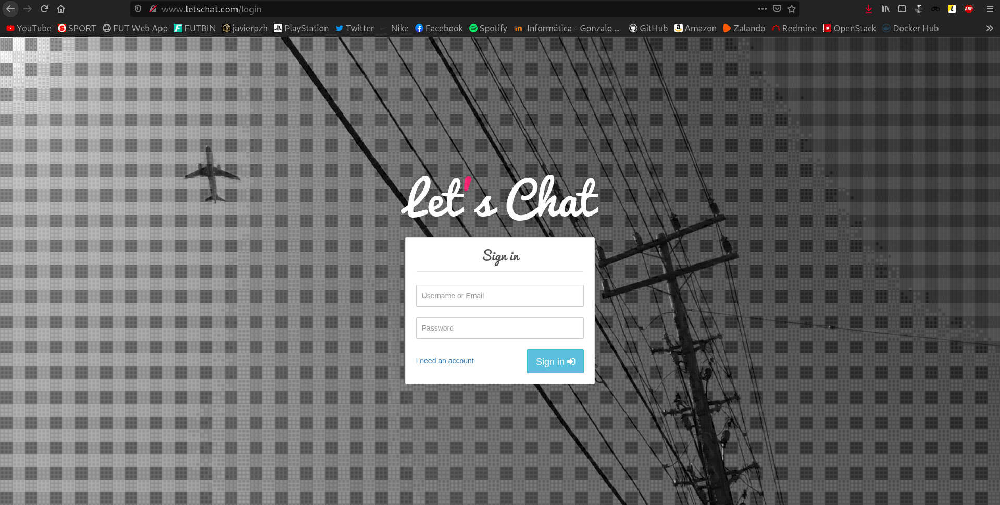

En este artículo vamos a crear un cluster de Kubernetes (k8s) y para ello he decidido utilizar la distribución k3s. Posteriormente, desplegaremos la aplicación Let's Chat en él.
Todo el proceso se llevará a cabo en varias instancias de OpenStack:
- controlador: máquina que controlará el cluster. Posee la dirección IP 172.22.201.59
- worker1: máquina que actuará como worker. Posee la dirección IP 172.22.201.69
- worker2: máquina que actuará como worker. Posee la dirección IP 172.22.201.79
¿Qué es k3s?
k3s es una distribución de Kubernetes, desarrollada por Rancher Labs, muy ligera y muy fácil de instalar, que requiere pocos requisitos y un uso de memoria mínimo.
Para el planteamiento de un entorno de desarrollo, esto se convierte en una gran mejora sobre lo que hemos hablado anteriormente en Kubernetes; crear un entorno mínimo para desarrollo, donde la creación del entorno es compleja y requiere de muchos recursos, aunque sea Ansible el que realice el trabajo difícil.
Entre las herramientas que nos proporciona se incluye kubectl. Esta herramienta, es una interfaz de línea de comandos desarrollada en Go para gestionar nuestros clusters de manera centralizada.
A continuación podemos ver un diagrama acerca de la estructura interna de k3s:

Instalación de k3s en el controlador
Para llevar a cabo la instalación del software de k3s, vamos a utilizar el script de instalación que se nos proporciona. Para ello, necesitaremos la herramienta curl en nuestro sistema, así que vamos a instalarla:
apt install curl -y
Una vez instalada, procederemos a la descarga del propio software ejecutando el siguiente comando:
root@controlador:~# curl -sfL https://get.k3s.io | sh - [INFO] Finding release for channel stable [INFO] Using v1.20.4+k3s1 as release [INFO] Downloading hash https://github.com/k3s-io/k3s/releases/download/v1.20.4+k3s1/sha256sum-amd64.txt [INFO] Downloading binary https://github.com/k3s-io/k3s/releases/download/v1.20.4+k3s1/k3s [INFO] Verifying binary download [INFO] Installing k3s to /usr/local/bin/k3s [INFO] Creating /usr/local/bin/kubectl symlink to k3s [INFO] Creating /usr/local/bin/crictl symlink to k3s [INFO] Creating /usr/local/bin/ctr symlink to k3s [INFO] Creating killall script /usr/local/bin/k3s-killall.sh [INFO] Creating uninstall script /usr/local/bin/k3s-uninstall.sh [INFO] env: Creating environment file /etc/systemd/system/k3s.service.env [INFO] systemd: Creating service file /etc/systemd/system/k3s.service [INFO] systemd: Enabling k3s unit Created symlink /etc/systemd/system/multi-user.target.wants/k3s.service → /etc/systemd/system/k3s.service. [INFO] systemd: Starting k3s
Realizada la instalación, ya dispondríamos de todas las herramientas necesarias, incluyendo kubectl. Para comprobarlo vamos a listar los nodos existentes en el cluster:
root@controlador:~# kubectl get nodes NAME STATUS ROLES AGE VERSION controlador Ready control-plane,master 113s v1.20.4+k3s1
Lógicamente tan sólo nos muestra uno, que hace referencia al propio nodo que acabamos de instalar, ya que aún no hemos asociado ningún worker.
Es el momento de vincular los workers, para ello, necesitaremos conocer el token del nodo maestro. Para conocer dicho token ejecutamos el siguiente comando:
root@controlador:~# cat /var/lib/rancher/k3s/server/node-token K10fad848963eda043b3b917043618456893554b621a76f832e41883708a4dc094a::server:af342b2794ad1f7bcdfe0a7bd0ae9f31
Hecho esto, es el momento de pasar con la instalación de k3s en los workers.
Instalación de k3s en los workers
Para llevar a cabo la instalación del software de k3s en estas máquinas, volveremos a utilizar el script de instalación que se nos proporciona, pero esta vez, tendremos que indicarle dos parámetros para llevar a cabo la vinculación al nodo maestro. Dichos parámetros son:
- K3S_URL: indica la URL del controlador, a la que se conectará el worker.
- K3S_TOKEN: indica el token del nodo maestro.
De igual manera, volveremos a necesitar la herramienta curl en nuestro sistema, así que vamos a instalarla:
apt install curl -y
Llevamos a cabo las instalaciones:
worker1
root@worker1:~# curl -sfL https://get.k3s.io | K3S_URL=https://172.22.201.59:6443 K3S_TOKEN=K10fad848963eda043b3b917043618456893554b621a76f832e41883708a4dc094a::server:af342b2794ad1f7bcdfe0a7bd0ae9f31 sh - [INFO] Finding release for channel stable [INFO] Using v1.20.4+k3s1 as release [INFO] Downloading hash https://github.com/k3s-io/k3s/releases/download/v1.20.4+k3s1/sha256sum-amd64.txt [INFO] Downloading binary https://github.com/k3s-io/k3s/releases/download/v1.20.4+k3s1/k3s [INFO] Verifying binary download [INFO] Installing k3s to /usr/local/bin/k3s [INFO] Creating /usr/local/bin/kubectl symlink to k3s [INFO] Creating /usr/local/bin/crictl symlink to k3s [INFO] Creating /usr/local/bin/ctr symlink to k3s [INFO] Creating killall script /usr/local/bin/k3s-killall.sh [INFO] Creating uninstall script /usr/local/bin/k3s-agent-uninstall.sh [INFO] env: Creating environment file /etc/systemd/system/k3s-agent.service.env [INFO] systemd: Creating service file /etc/systemd/system/k3s-agent.service [INFO] systemd: Enabling k3s-agent unit Created symlink /etc/systemd/system/multi-user.target.wants/k3s-agent.service → /etc/systemd/system/k3s-agent.service. [INFO] systemd: Starting k3s-agent
worker2
root@worker2:~# curl -sfL https://get.k3s.io | K3S_URL=https://172.22.201.59:6443 K3S_TOKEN=K10fad848963eda043b3b917043618456893554b621a76f832e41883708a4dc094a::server:af342b2794ad1f7bcdfe0a7bd0ae9f31 sh - [INFO] Finding release for channel stable [INFO] Using v1.20.4+k3s1 as release [INFO] Downloading hash https://github.com/k3s-io/k3s/releases/download/v1.20.4+k3s1/sha256sum-amd64.txt [INFO] Downloading binary https://github.com/k3s-io/k3s/releases/download/v1.20.4+k3s1/k3s [INFO] Verifying binary download [INFO] Installing k3s to /usr/local/bin/k3s [INFO] Creating /usr/local/bin/kubectl symlink to k3s [INFO] Creating /usr/local/bin/crictl symlink to k3s [INFO] Creating /usr/local/bin/ctr symlink to k3s [INFO] Creating killall script /usr/local/bin/k3s-killall.sh [INFO] Creating uninstall script /usr/local/bin/k3s-agent-uninstall.sh [INFO] env: Creating environment file /etc/systemd/system/k3s-agent.service.env [INFO] systemd: Creating service file /etc/systemd/system/k3s-agent.service [INFO] systemd: Enabling k3s-agent unit Created symlink /etc/systemd/system/multi-user.target.wants/k3s-agent.service → /etc/systemd/system/k3s-agent.service. [INFO] systemd: Starting k3s-agent
Finalizada la instalación en ambos workers, vamos a listar los nodos existentes en el nodo maestro:
root@controlador:~# kubectl get nodes NAME STATUS ROLES AGE VERSION controlador Ready control-plane,master 8m25s v1.20.4+k3s1 worker1 Ready81s v1.20.4+k3s1 worker2 Ready 51s v1.20.4+k3s1
Podemos ver como efectivamente, ahora sí nos muestra los dos workers que acabamos de vincular.
Conectando nuestro cluster a la máquina anfitriona
Una vez tenemos nuestro cluster listo, vamos a configurarlo para que en vez de gestionarlo desde la máquina controlador, lo podamos gestionar desde nuestra máquina anfitriona, lo cuál sería mucho más cómodo.
Lo primero que debemos hacer, es instalar kubectl en nuestra máquina anfitriona. Para hacer esto, debemos ejecutar los siguientes comandos:
echo "deb https://apt.kubernetes.io/ kubernetes-xenial main" | sudo tee -a /etc/apt/sources.list.d/kubernetes.list curl -s https://packages.cloud.google.com/apt/doc/apt-key.gpg | sudo apt-key add - apt update && apt install kubectl -y
Una vez disponemos de la herramienta, vamos a crear el directorio ~/.kube:
root@debian:~# mkdir .kube
¿Y para qué creamos este directorio? Pues porque para conectarnos a nuestro cluster remotamente, necesitaremos un fichero llamado config almacenado en esta ruta.
Bien, el contenido del fichero config debe ser el mismo contenido que podemos encontrar en el fichero /etc/rancher/k3s/k3s.yaml del nodo maestro de nuestro cluster, por tanto copiamos dicho contenido. En mi caso queda de esta manera:
root@debian:~# cat .kube/config
apiVersion: v1
clusters:
- cluster:
certificate-authority-data: LS0tLS1CRUdJTiBDRVJUSUZJQ0FURS0tLS0tCk1JSUJkekNDQVIyZ0F3SUJBZ0lCQURBS0JnZ3Foa2pPUFFRREFqQWpNU0V3SHdZRFZRUUREQmhyTTNNdGMyVnkKZG1WeUxXTmhRREUyTVRRNU5qZ3pPREl3SGhjTk1qRXdNekExTVRneE9UUXlXaGNOTXpFd016QXpNVGd4T1RReQpXakFqTVNFd0h3WURWUVFEREJock0zTXRjMlZ5ZG1WeUxXTmhRREUyTVRRNU5qZ3pPREl3V1RBVEJnY3Foa2pPClBRSUJCZ2dxaGtqT1BRTUJCd05DQUFTL254RkNkRk1kODlPQ1VObTJTa3h0cWk3WUlGUGFBVDR2ckRzY2tJYTkKVzNha3l1di9MNVVlakdXK1FrWVF1TXp5a1pXdGVOKytIQSt4SkZ5YkZPdW9vMEl3UURBT0JnTlZIUThCQWY4RQpCQU1DQXFRd0R3WURWUjBUQVFIL0JBVXdBd0VCL3pBZEJnTlZIUTRFRmdRVXlWM1lYS2Q2dWNYNDVhajY1Nk9mCktJZ2RnYmt3Q2dZSUtvWkl6ajBFQXdJRFNBQXdSUUloQUpBVTNDekpBME9RSGR1SnUyZzNSeXBjQUZnVHFyem8KbWZaMUhtN0YvWUZEQWlCbzhpSEdsUDZvUXJKYUI4Q2lKUnJWSVJQNkFWeGJzQTBjZlBsalBSMG9BZz09Ci0tLS0tRU5EIENFUlRJRklDQVRFLS0tLS0K
server: https://127.0.0.1:6443
name: default
contexts:
- context:
cluster: default
user: default
name: default
current-context: default
kind: Config
preferences: {}
users:
- name: default
user:
client-certificate-data: LS0tLS1CRUdJTiBDRVJUSUZJQ0FURS0tLS0tCk1JSUJrakNDQVRlZ0F3SUJBZ0lJVWdQTGJDWXFFMWN3Q2dZSUtvWkl6ajBFQXdJd0l6RWhNQjhHQTFVRUF3d1kKYXpOekxXTnNhV1Z1ZEMxallVQXhOakUwT1RZNE16Z3lNQjRYRFRJeE1ETXdOVEU0TVRrME1sb1hEVEl5TURNdwpOVEU0TVRrME1sb3dNREVYTUJVR0ExVUVDaE1PYzNsemRHVnRPbTFoYzNSbGNuTXhGVEFUQmdOVkJBTVRESE41CmMzUmxiVHBoWkcxcGJqQlpNQk1HQnlxR1NNNDlBZ0VHQ0NxR1NNNDlBd0VIQTBJQUJKeDRyUkFsRWdpN0RQZGQKTTJ4NGFBQVVEdEdBSzR2Rzlhd2ZmL1RsZ0YxZ1NaRHZRMTBwKzd0WHg3RjdPajZoQVNGcWNWNlZxaEtidU53ZwpyT2ZLRFZXalNEQkdNQTRHQTFVZER3RUIvd1FFQXdJRm9EQVRCZ05WSFNVRUREQUtCZ2dyQmdFRkJRY0RBakFmCkJnTlZIU01FR0RBV2dCVEpTRE9YUnFZQzZuMWtZOHJkUHQ0VWo3VllDVEFLQmdncWhrak9QUVFEQWdOSkFEQkcKQWlFQTllUzhpUGpoaHloVWZYL01nZXJqOFN3dmlNMnUzNzFPanMycXVkanJNQlVDSVFDRG5qSmQzbFpoMVphZwpjUmcwdU1QMzdaQ0lTTnBtQWVDMHRjYXlCT3hOTHc9PQotLS0tLUVORCBDRVJUSUZJQ0FURS0tLS0tCi0tLS0tQkVHSU4gQ0VSVElGSUNBVEUtLS0tLQpNSUlCZURDQ0FSMmdBd0lCQWdJQkFEQUtCZ2dxaGtqT1BRUURBakFqTVNFd0h3WURWUVFEREJock0zTXRZMnhwClpXNTBMV05oUURFMk1UUTVOamd6T0RJd0hoY05NakV3TXpBMU1UZ3hPVFF5V2hjTk16RXdNekF6TVRneE9UUXkKV2pBak1TRXdId1lEVlFRRERCaHJNM010WTJ4cFpXNTBMV05oUURFMk1UUTVOamd6T0RJd1dUQVRCZ2NxaGtqTwpQUUlCQmdncWhrak9QUU1CQndOQ0FBVFBhR0FxbFhkRk5LSW96VDFjZUhXVEFxTXlGczFCV0JnbjB6dDNnd0FnClEzUVJUb0QrRzJZQi84WTl0SDZQQzAzbktRYW1PakNjV3BlSkRxdFQzVzVBbzBJd1FEQU9CZ05WSFE4QkFmOEUKQkFNQ0FxUXdEd1lEVlIwVEFRSC9CQVV3QXdFQi96QWRCZ05WSFE0RUZnUVV5VWd6bDBhbUF1cDlaR1BLM1Q3ZQpGSSsxV0Frd0NnWUlLb1pJemowRUF3SURTUUF3UmdJaEFNTGs3TDNhQk9Nc0kwWURRQVhkREs4bkpzNDZLR0pPCm50alRYcUNLL2JSRUFpRUF3QnowZll3S1BaY0toV0hhYUw2S1IydlFmTnhFTjNNZUZUS0l4VEViMXBRPQotLS0tLUVORCBDRVJUSUZJQ0FURS0tLS0tCg==
client-key-data: LS0tLS1CRUdJTiBFQyBQUklWQVRFIEtFWS0tLS0tCk1IY0NBUUVFSUVaWDF5WkNMRDBEbExac3dZSWcvY1lSNysxYlMyTHJyb1JwMXRGVkJheGpvQW9HQ0NxR1NNNDkKQXdFSG9VUURRZ0FFbkhpdEVDVVNDTHNNOTEwemJIaG9BQlFPMFlBcmk4YjFyQjkvOU9XQVhXQkprTzlEWFNuNwp1MWZIc1hzNlBxRUJJV3B4WHBXcUVwdTQzQ0NzNThvTlZRPT0KLS0tLS1FTkQgRUMgUFJJVkFURSBLRVktLS0tLQo=
Una vez tenemos el mismo contenido en nuestro equipo anfitrión, debemos cambiar el valor del parámetro server, y en él establecer la dirección del nodo maestro del cluster. En mi caso esta directiva quedaría tal que así:
root@debian:~# cat .kube/config
...
server: https://172.22.201.59:6443
...
En teoría ya habríamos realizado toda la configuración y podríamos gestionar nuestro cluster remotamente, para ello vamos a intentar los nodos existentes en él mediante el siguiente comando: kubectl get nodes. En este punto, en mi caso, me reportó un error debido a certificados x509, que logré solucionar con el siguiente comando:
kubectl --insecure-skip-tls-verify cluster-info dump
Tras él, volvemos a intentar listar los nodos:
root@debian:~# kubectl get nodes NAME STATUS ROLES AGE VERSION worker1 Ready30m v1.20.4+k3s1 worker2 Ready 30m v1.20.4+k3s1 controlador Ready control-plane,master 37m v1.20.4+k3s1
Efectivamente podemos ver los tanto el nodo maestro como los workers por lo que ya podríamos gestionar nuestro cluster de manera remota.
Desplegando una aplicación en nuestro cluster
Para desplegar la aplicación Let's Chat utilizaremos este repositorio de GitHub, que contiene todos los ficheros .yaml en los que se definen los deployment, los servicios, ...
En primer lugar, lógicamente clonaremos dicho repositorio. Si no disponemos de la herramienta git, tendremos que instalarla.
root@debian:/home/javier/Kubernetes# git clone https://github.com/iesgn/kubernetes-storm.git Clonando en 'kubernetes-storm'... remote: Enumerating objects: 288, done. remote: Counting objects: 100% (288/288), done. remote: Compressing objects: 100% (213/213), done. remote: Total 288 (delta 119), reused 224 (delta 60), pack-reused 0 Recibiendo objetos: 100% (288/288), 6.36 MiB | 8.71 MiB/s, listo. Resolviendo deltas: 100% (119/119), listo.
Cuando hayamos clonado el repositorio, tendremos que dirigirnos a la ruta unidad3/ejemplos-3.2/ejemplo8/ que es donde se encuentran los ficheros de esta aplicación:
root@debian:/home/javier/Kubernetes# cd kubernetes-storm/unidad3/ejemplos-3.2/ejemplo8/ root@debian:/home/javier/Kubernetes/kubernetes-storm/unidad3/ejemplos-3.2/ejemplo8# ls -l total 20 -rw-r--r-- 1 root root 247 mar 5 20:15 ingress.yaml -rw-r--r-- 1 root root 394 mar 5 20:15 letschat-deployment.yaml -rw-r--r-- 1 root root 177 mar 5 20:15 letschat-srv.yaml -rw-r--r-- 1 root root 358 mar 5 20:15 mongo-deployment.yaml -rw-r--r-- 1 root root 149 mar 5 20:15 mongo-srv.yaml
Podemos observar que hay cinco ficheros. Dos de ellos definen los deployment para la base de datos MongoDB y para la propia aplicación Let's Chat. Otros dos nos ofrecerán los servicios de dichos procesos. El último fichero ingress.yaml lo veremos más adelante.
En este punto, todo estaría listo para definir el primer deployment, en este caso el de MongoDB. Este deployment tendrá como consecuencia la generación de un ReplicaSet con un pod, que ejecutará una imagen mongo.
Para definir dicho deployment utilizaremos el siguiente comando:
root@debian:/home/javier/Kubernetes/kubernetes-storm/unidad3/ejemplos-3.2/ejemplo8# kubectl apply -f mongo-deployment.yaml deployment.apps/mongo created
Podemos apreciar en la salida del comando como efectivamente se ha definido dicho deployment.
El siguiente paso, será definir el servicio de nuestra base de datos, esto nos permitirá poder acceder a ella. Ejecutamos el siguiente comando:
root@debian:/home/javier/Kubernetes/kubernetes-storm/unidad3/ejemplos-3.2/ejemplo8# kubectl apply -f mongo-srv.yaml service/mongo created
Una vez hayamos creado el servicio, habremos terminado con lo relativo a MongoDB.
El mismo proceso que hemos llevado a cabo con nuestra base de datos, tendremos que seguir con nuestra aplicación.
Por tanto, empezaremos por definir su deployment, que al igual que el anterior, generará un ReplicaSet con sólo un pod, que ejecutará una imagen sdelements/lets-chat.
Definiremos el deployment utilizando el siguiente comando:
root@debian:/home/javier/Kubernetes/kubernetes-storm/unidad3/ejemplos-3.2/ejemplo8# kubectl apply -f letschat-deployment.yaml deployment.apps/letschat created
Podemos apreciar en la salida del comando como efectivamente se ha definido este deployment.
El siguiente paso, será definir el servicio de nuestra aplicación, esto nos permitirá poder acceder a ella. Ejecutamos el siguiente comando:
root@debian:/home/javier/Kubernetes/kubernetes-storm/unidad3/ejemplos-3.2/ejemplo8# kubectl apply -f letschat-srv.yaml service/letschat created
Una vez hayamos creado el servicio, habremos terminado con lo relativo a Let's Chat, y por tanto todo estaría preparado.
Para comprobar que los deployment han sido correctamente creados, vamos a utilizar este comando:
root@debian:/home/javier/Kubernetes/kubernetes-storm/unidad3/ejemplos-3.2/ejemplo8# kubectl get deploy,rs,po -o wide NAME READY UP-TO-DATE AVAILABLE AGE CONTAINERS IMAGES SELECTOR deployment.apps/mongo 1/1 1 1 34m mongo mongo name=mongo deployment.apps/letschat 1/1 1 1 30m letschat sdelements/lets-chat name=letschat NAME DESIRED CURRENT READY AGE CONTAINERS IMAGES SELECTOR replicaset.apps/mongo-5c694c878b 1 1 1 34m mongo mongo name=mongo,pod-template-hash=5c694c878b replicaset.apps/letschat-7c66bd64f5 1 1 1 30m letschat sdelements/lets-chat name=letschat,pod-template-hash=7c66bd64f5 NAME READY STATUS RESTARTS AGE IP NODE NOMINATED NODE READINESS GATES pod/mongo-5c694c878b-bwhsr 1/1 Running 0 34m 10.42.1.3 worker1pod/letschat-7c66bd64f5-467dp 1/1 Running 0 105s 10.42.2.3 worker2
Y para comprobar que los servicios han sido correctamente creados, vamos a utilizar este comando:
root@debian:/home/javier/Kubernetes/kubernetes-storm/unidad3/ejemplos-3.2/ejemplo8# kubectl get svc NAME TYPE CLUSTER-IP EXTERNAL-IP PORT(S) AGE kubernetes ClusterIP 10.43.0.1443/TCP 96m mongo ClusterIP 10.43.108.67 27017/TCP 8m14s letschat NodePort 10.43.5.244 8080:32094/TCP 111s
En este momento, ya tendríamos disponible nuestra aplicación y podríamos acceder a ella. Para ello nos dirigiremos a nuestro navegador e introduciremos la dirección IP del nodo maestro, pero además de esto, debemos indicar el puerto donde se está sirviendo Let's Chat. Para conocer este puerto, que por defecto nos lo asigna en el rango comprendido entre 30000 y 40000, podemos utilizar el siguiente comando:
root@debian:/home/javier/Kubernetes/kubernetes-storm/unidad3/ejemplos-3.2/ejemplo8# kubectl describe service/letschat | grep NodePort Type: NodePort NodePort: http 32094/TCP
Podemos ver como, en mi caso, está utilizando el puerto 32094, por tanto yo introduciré en mi navegador la dirección 172.22.201.59:32094:

¡Vaya! Aquí podemos ver como efectivamente poseemos nuestra aplicación.
Pero, ¿no es demasiado incómodo tener que introducir este puerto tan inusual cada vez que queramos acceder a la aplicación? Para solucionar esto, pasaremos al siguiente apartado.
Proxy inverso con Ingress
Gracias a los controladores Ingress o Ingress controller podemos realizar un proxy inverso, y así evitar tener que acceder a direcciones tan incómodas como la anterior, indicando nuestras aplicaciones por medio de nombres.
Si recordamos, poseemos un fichero llamado ingress.yaml que aún no hemos utilizado. Al definir este fichero, cambiaremos el comportamiento y podremos acceder a nuestra aplicación en la dirección www.letschat.com, usando resolución estática claro. Ejecutamos el siguiente comando:
root@debian:/home/javier/Kubernetes/kubernetes-storm/unidad3/ejemplos-3.2/ejemplo8# kubectl apply -f ingress.yaml Warning: networking.k8s.io/v1beta1 Ingress is deprecated in v1.19+, unavailable in v1.22+; use networking.k8s.io/v1 Ingress ingress.networking.k8s.io/ingress-letschat created
Parece que se ha generado el nuevo ingress, pero vamos a comprobarlo listando los ingress existentes en nuestro cluster:
root@debian:/home/javier/Kubernetes/kubernetes-storm/unidad3/ejemplos-3.2/ejemplo8# kubectl get ingress NAME CLASS HOSTS ADDRESS PORTS AGE ingress-letschatwww.letschat.com 10.0.0.13 80 30s
Podemos apreciar como efectivamente se ha creado el ingress y ahora está utilizando el puerto 80.
Por último, añadiremos la línea relativa al nodo maestro en nuestro fichero /etc/hosts. En mi caso, añado la siguiente línea:
172.22.201.59 www.letschat.com
Hecho esto, nos dirigimos a nuestro navegador e introducimos la dirección www.letschat.com:

¡Bien! Ahora podremos acceder a Let's Chat siempre que queramos en la dirección www.letschat.com.
.